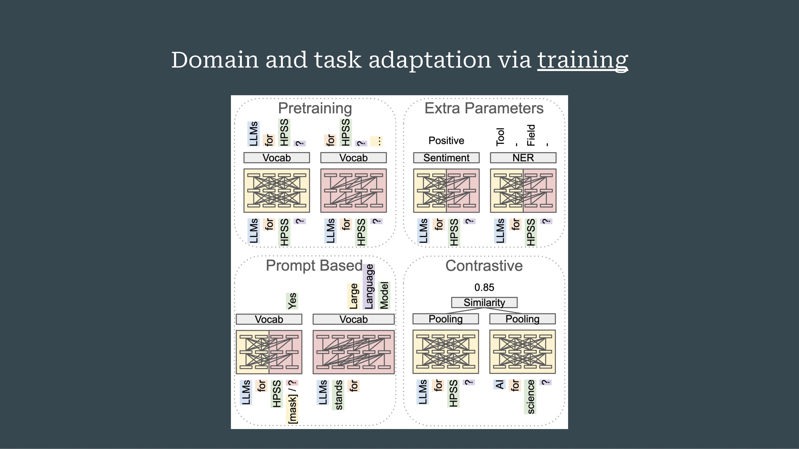
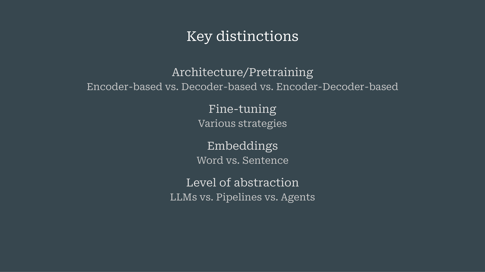
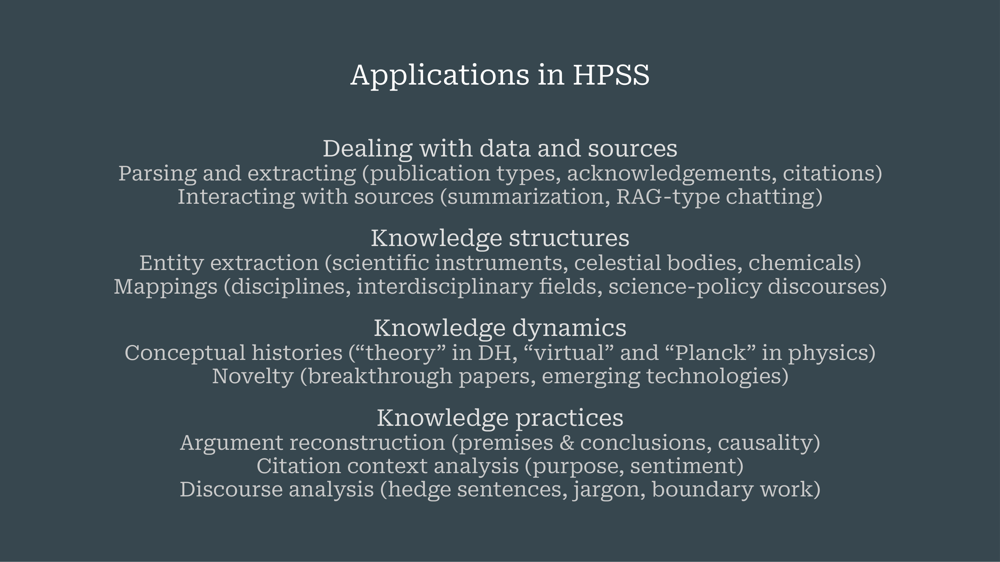
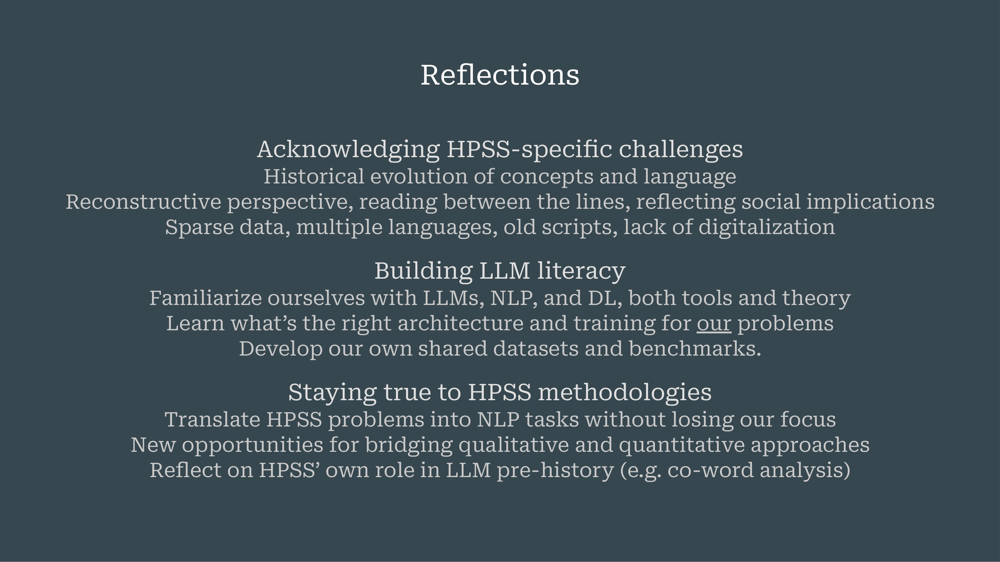

Large Language Models for the History, Philosophy, and Sociology of Science
Overview
This chapter comprehensively explores the application of Large Language Models (LLMs) within the History, Philosophy, and Sociology of Science (HPSS) domain. It commences by providing a foundational primer on LLM architectures, specifically detailing the Transformer model and its derivatives, BERT and GPT. The discussion then transitions to summarising current applications of LLMs in HPSS research, categorising them into data handling, knowledge structuring, knowledge dynamics, and knowledge practices.
Crucially, the authors identify key distinctions in LLM types and adaptation strategies, including pre-training, fine-tuning, and Retrieval-Augmented Generation (RAG) pipelines. The chapter highlights the accelerating interest in LLMs across academic journals, whilst acknowledging persistent concerns regarding computational resources, model opaqueness, data scarcity, and the absence of standardised benchmarks.
The authors conclude by offering critical reflections on HPSS-specific challenges, such as the historical evolution of concepts and sparse, multilingual data. They advocate for enhanced LLM literacy amongst researchers and a steadfast adherence to HPSS methodologies to prevent technological tools from dictating research objectives. Ultimately, this chapter underscores the potential of LLMs to bridge qualitative and quantitative research approaches within the HPSS field, fostering new avenues for interdisciplinary inquiry.
3.1 Introduction to Large Language Models and HPSS Applications
This chapter establishes a foundational understanding of Large Language Models (LLMs) and their specific applications within the History, Philosophy, and Sociology of Science (HPSS). Primarily, it aims to furnish a concise primer on LLMs, detailing their adaptation to diverse scientific domains. Subsequently, the discussion summarises current LLM applications pertinent to HPSS research. Finally, the authors offer critical reflections, intended to stimulate further discussion throughout the workshop. Given the varied technical backgrounds of the audience, the initial segment focuses on accessible explanations of complex LLM concepts.
3.2 The Transformer Architecture: Foundation of Modern LLMs
The foundational architecture underpinning contemporary Large Language Models is the Transformer. Vaswani and colleagues originally introduced this model in their seminal 2017 paper, “Attention is all you need” (vaswani2017attention?). Initially conceived for language translation tasks, such as converting German to English, this architecture comprises two interconnected streams: an encoder and a decoder.
The encoder, positioned on the left, processes the entire input sentence simultaneously. Crucially, it enables each word within the input to interact with every other word, thereby constructing a comprehensive contextual representation of the complete sentence. Words initially feed into this component and subsequently encode into numerical representations.
Conversely, the decoder, located on the right, generates the output sentence. This component operates sequentially, predicting each subsequent word based solely on its predecessors; it cannot access future words. The numerical representations from the encoder transmit to the decoder, which then transforms them back into words. Each generated word subsequently feeds back into the decoder’s input, forming a loop that continues until the complete sentence is produced. Within both the encoder and decoder, various layers refine contextualised word embeddings, progressively enhancing their contextual understanding.
3.3 Encoder-Based Models: BERT for Bidirectional Contextual Understanding

Following the introduction of the Transformer model, Devlin and colleagues promptly began re-engineering its individual streams to develop pre-trained language models (devlin2018bert?). These models, rather than focusing solely on translation, excel at understanding and generating language, making them highly adaptable for various Natural Language Processing (NLP) tasks with minimal additional training.
A prominent example of such a model is BERT, or Bidirectional Encoder Representations from Transformers. BERT specifically leverages the encoder side of the Transformer architecture. Its defining characteristic is its capacity for bidirectional, full-context understanding; every word within the input stream can interact with all other words, thereby constructing a comprehensive contextual representation of the entire input at once. During its pre-training phase, BERT learns by predicting randomly masked words within a text. Consequently, BERT-like models are primarily designed for coherent sentence understanding, distinguishing them from models focused on generating novel text. Despite newer developments, the BERT family of models maintains a significant presence and utility in the field.
3.4 Decoder-Based Models: GPT for Unidirectional Generative Capabilities

Conversely, the GPT models, standing for Generative Pre-trained Transformers, derive from the decoder side of the Transformer architecture, as detailed by Radford and colleagues in 2018 (radford2018improving?). These models possess a unidirectional generative capability, meaning they can only consider preceding words when generating new text. This structural difference enables GPT models to produce novel language, a feature that powers widely used applications such as ChatGPT.
Notably, GPT models fundamentally differ from BERT models: whilst GPT excels at generating new words, BERT primarily focuses on understanding the full context of an input. Beyond these two primary types, the field also features hybrid architectures that combine encoders and decoders, alongside decoder-only models engineered to emulate encoder-like functionalities, such as XLNet and XLM. Understanding this core distinction between generative models, which produce language, and full-context models, which coherently understand sentences, remains paramount for effective application.
3.5 Evolution and Specialisation of Scientific LLMs

The landscape of Large Language Models has undergone rapid and diverse evolution between 2018 and 2024, particularly within scientific domains. Researchers categorise these models primarily by their underlying architecture: encoders, such as the BERT-type models; decoders, exemplified by GPT-type models; and hybrid encoder-decoder configurations, alongside other distinct architectures.
Early popular examples of domain-specific models include BioBERT, Specter, and Cyber. Subsequently, the field has witnessed the development of specialised LLMs tailored for a wide array of scientific disciplines, encompassing biomedicine, chemistry, material science, climate science, mathematics, physics, and social science. For researchers in the History, Philosophy, and Sociology of Science, this proliferation signifies a substantial opportunity either to leverage existing domain-specific models or to develop bespoke solutions. Analysis of the current landscape indicates a greater prevalence of encoder models in scientific applications compared to decoder models.
3.6 Strategies for Domain and Task Adaptation of LLMs

Adapting Large Language Models to specific scientific languages and tasks involves several distinct strategies. The most fundamental approach is pre-training, wherein a model initially learns language by predicting either the next token, as seen in GPT models, or random masked words, characteristic of BERT models. However, this process demands prohibitive computational resources and vast datasets, rendering it generally unfeasible for individual researchers.
A more accessible alternative is continued pre-training. This involves taking an already pre-trained model and further training it on domain-specific language; for instance, the authors’ own research has refined a BERT model using physics texts. Beyond this, researchers can adapt models by adding extra parameters or layers atop pre-trained architectures, which then train for specific downstream tasks such as sentiment analysis or named entity recognition.
Whilst prompt-based adaptation offers another avenue for guiding model behaviour without extensive retraining, contrastive learning represents a crucial method for generating sentence or document embeddings. This technique, often leveraging BERT models, produces embeddings where semantically similar inputs position closely in the embedding space, whilst dissimilar inputs keep distant. Sentence BERT, for example, is a widely adopted approach that facilitates the creation of comprehensive sentence and document embeddings from initial word embeddings.
3.7 Retrieval-Augmented Generation (RAG) Pipelines

Retrieval-Augmented Generation (RAG) constitutes a sophisticated pipeline system rather than a singular Large Language Model. This architecture typically integrates at least two or more models that operate in concert. Specifically, BERT-type models are employed to assess the semantic similarity between a user’s query and a corpus of documents. Concurrently, generative models are tasked with formulating responses, drawing upon the context retrieved by the BERT-type components.
The RAG workflow unfolds systematically: a user’s query, such as “What are LLMs?”, first encodes into a sentence embedding by a BERT-type model. This model then queries a database of relevant documents, identifying and retrieving passages that exhibit the highest semantic similarity. Subsequently, these retrieved passages seamlessly integrate into the prompt provided to a generative model. Armed with this augmented context, the generative model then synthesises a comprehensive answer. This sophisticated pipeline is now a ubiquitous feature in contemporary LLM applications, exemplified by ChatGPT’s capacity to search the internet and present relevant results. More broadly, advanced reasoning models and agents represent complex systems that combine LLMs with a diverse array of other computational tools.
3.8 Key Distinctions in Large Language Model Paradigms

To navigate the complex landscape of Large Language Models effectively, several key distinctions warrant careful consideration.
- Firstly, models fundamentally differ in their underlying architecture, broadly categorised as encoder-based, decoder-based, or hybrid encoder-decoder configurations.
- Secondly, a diverse array of fine-tuning strategies exists, each designed to adapt pre-trained models for specific tasks.
- Thirdly, a critical conceptual difference lies between word embeddings and sentence embeddings, as these represent distinct levels of semantic representation.
- Finally, it is imperative to recognise the varying levels of abstraction at which LLMs operate: they can function as individual models, as integral components within larger pipelines such as RAG systems, or as sophisticated agents that combine LLMs with a multitude of other computational tools.
3.9 Applications of LLMs in History, Philosophy, and Sociology of Science

A recent survey of Large Language Model users within History, Philosophy, and Sociology of Science (HPSS) research has delineated four primary categories of application.
- Dealing with data and sources: LLMs prove invaluable for facilitating the parsing and extraction of diverse information, including publication types, acknowledgements, and citations. Moreover, they enable more dynamic interaction with sources through summarisation and RAG-type conversational interfaces.
- Analysis of knowledge structures: LLMs contribute significantly to this area. This encompasses the extraction of specific entities, such as scientific instruments, celestial bodies, or chemicals, alongside the mapping of complex relationships, including disciplinary boundaries, interdisciplinary fields, and science-policy discourses.
- Investigation of knowledge dynamics: The models offer powerful tools for this purpose. This involves tracing conceptual histories—for instance, the evolution of terms like “theory” in Digital Humanities or “virtual” and “Planck” in physics. Furthermore, LLMs can assist in detecting novelty, identifying breakthrough papers, and pinpointing emerging technologies.
- Enhancement of knowledge practices: LLMs support argument reconstruction by identifying premises, conclusions, and causal links within texts. Citation context analysis, an established HPSS tradition often now confined to evaluatory purposes, gains renewed utility for broader HPSS tasks. Additionally, LLMs facilitate nuanced discourse analysis, enabling the detection of subtle linguistic features such as hedge sentences, specialised jargon, and instances of boundary work.
3.10 Observations and Concerns in HPSS LLM Adoption

Current trends indicate an accelerating interest in Large Language Models within the academic community, extending even to journals not traditionally associated with computational methods, such as Scientometrics and JASIST. This growing adoption reflects the profound semantic capabilities of these models, which increasingly appeal to qualitative researchers and philosophers.
The degree of customisation in LLM application varies considerably, ranging from the straightforward, off-the-shelf use of tools like ChatGPT to the development of entirely new architectures, alongside custom pre-training and fine-tuning. Despite this burgeoning interest, several recurring concerns persist. Researchers frequently highlight the overwhelming computational resources required, the inherent opaqueness of many models, and a pervasive lack of both sufficient training data and standardised benchmarks.
Furthermore, the necessity of navigating trade-offs between different model types, such as BERT-like and GPT-like architectures, underscores that no single model serves all purposes. Rather, the selection of an adequate model remains contingent upon the specific research objective. Nevertheless, a discernible trend towards greater accessibility is emerging, exemplified by tools like BERTopic for topic modelling, which are gaining widespread adoption due to their user-friendliness and robust maintenance.
3.11 Reflections on HPSS-Specific Challenges and LLM Integration

Integrating Large Language Models into History, Philosophy, and Sociology of Science (HPSS) necessitates a careful consideration of several HPSS-specific challenges.
- Firstly, the historical evolution of concepts and language presents a significant hurdle. As LLMs predominantly train on modern language, they may exhibit biases when applied to historical texts. This necessitates either the development of bespoke models or the judicious application of existing ones, whilst acknowledging their inherent limitations.
- Secondly, HPSS adopts a reconstructive and critically reflective perspective, involving reading “between the lines” to understand authorial context and subtle discursive strategies, such as boundary work. Current LLMs do not inherently train for such nuanced interpretation, demanding innovative approaches to align model capabilities with HPSS methodologies.
- Thirdly, practical data issues persist, including sparse datasets, the presence of multiple languages, old scripts, and a general lack of digitalisation.
Addressing these challenges requires cultivating robust LLM literacy amongst researchers. This involves familiarising oneself with the tools and theoretical underpinnings of LLMs, Natural Language Processing (NLP), and Deep Learning (DL). Researchers must learn to identify the most appropriate architecture and training regimen for their specific problems, whilst collectively developing shared datasets and benchmarks tailored to HPSS needs. Although advancements in natural language processing may gradually reduce the need for extensive coding, a foundational understanding remains crucial to avoid merely generating aesthetically pleasing but analytically shallow visualisations.
Crucially, HPSS researchers must remain steadfast in their methodological principles. This entails translating complex HPSS problems into NLP tasks without compromising the original research focus or purpose. Nevertheless, LLMs present unprecedented opportunities for bridging qualitative and quantitative approaches, fostering interdisciplinary collaboration. Furthermore, it is pertinent to reflect upon HPSS’s own historical contributions to the pre-history of these models, exemplified by the co-word analysis developed by scholars like Colon and Ari Rip in the 1980s, which emerged from an Actor-Network Theory perspective and demonstrates a long-standing engagement with computational tools for conceptual analysis.
3.12 Additional Visual Materials
The following slides provide supplementary visual information that complements the main chapter content:
3.12.1 Slide 02

The slide presents the agenda for the presentation, framed as “Today’s Menu”. The main sections to be covered are listed as: “Primer on LLMs” (Large Language Models), “Applications in HPSS” (History, Philosophy, and Sociology of Science), and “Reflections”. This slide serves as a roadmap for the audience.
3.12.2 Slide 08

This slide, titled “Transformer”, presents the complete Transformer model architecture, now augmented with specific examples of Large Language Models (LLMs). On the “Encoder” side, “BERT” is shown, characterised as “bidirectional full-context” and linked to “LLMs for HPSS ?” and “Vocab”. On the “Decoder” side, “GPT” is introduced, characterised as “unidirectional generative” and also linked to “LLMs for HPSS ?” and “Vocab”. The full internal components of the Transformer (Input/Output Embedding, Positional Encoding, Multi-Head Attention, Feed Forward, Add & Norm, Softmax, Linear) are visible. The slide includes citations for “Vaswani et al. 2017: Attention is all you need”, “Devlin et al. 2018. BERT: Pre-training of…”, and “Radford et al. 2018. Improving Language…”.
3.12.3 Slide 14

The slide, titled “Applications in HPSS”, provides a comprehensive list of potential uses for Large Language Models within the History, Philosophy, and Sociology of Science. These applications are categorised into four main areas: “Dealing with data and sources”, which includes “Parsing and extracting (publication types, acknowledgements, citations)” and “Interacting with sources (summarisation, RAG-type chatting)”; “Knowledge structures”, covering “Entity extraction (scientific instruments, celestial bodies, chemicals)” and “Mappings (disciplines, interdisciplinary fields, science-policy discourses)”; “Knowledge dynamics”, addressing “Conceptual histories (“theory” in DH, “virtual” and “Planck” in physics)” and “Novelty (breakthrough papers, emerging technologies)”; and “Knowledge practices”, encompassing “Argument reconstruction (premises & conclusions, causality)”, “Citation context analysis (purpose, sentiment)”, and “Discourse analysis (hedge sentences, jargon, boundary work)”.
3.12.4 Slide 15

The slide, titled “Applications in HPSS”, continues the discussion by highlighting current trends and challenges. It notes “Accelerating interest in LLMs”, even in “non-computational journals”. It describes “Varying degrees of customisation”, ranging “From architectural tweakings and custom pretraining over custom fine-tuning to off-the-shelf use of ChatGPT”. The slide also lists “Repeating concerns” such as “Overwhelming computational resources, opaqueness, lack of training data, lack of benchmarks, trade-offs between model types (BERT-like vs. GPT-like)”. Finally, it points to a “Trend toward accessibility”, exemplified by the question “E.g. BERTopic as the new pyLDAvis?”.
3.12.5 Slide 16

The slide, titled “Reflections”, presents key considerations and future directions for LLMs in HPSS. It outlines “Acknowledging HPSS-specific challenges”, including “Historical evolution of concepts and language”, adopting a “Reconstructive perspective, reading between the lines, reflecting social implications”, and dealing with “Sparse data, multiple languages, old scripts, lack of digitalisation”. It emphasises “Building LLM literacy” by encouraging familiarity with “LLMs, NLP, and DL, both tools and theory”, learning “what’s the right architecture and training for our problems”, and developing “our own shared datasets and benchmarks”. Lastly, it stresses “Staying true to HPSS methodologies”, which involves translating “HPSS problems into NLP tasks without losing our focus”, exploring “New opportunities for bridging qualitative and quantitative approaches”, and reflecting on “HPSS’ own role in LLM pre-history (e.g. co-word analysis)”.